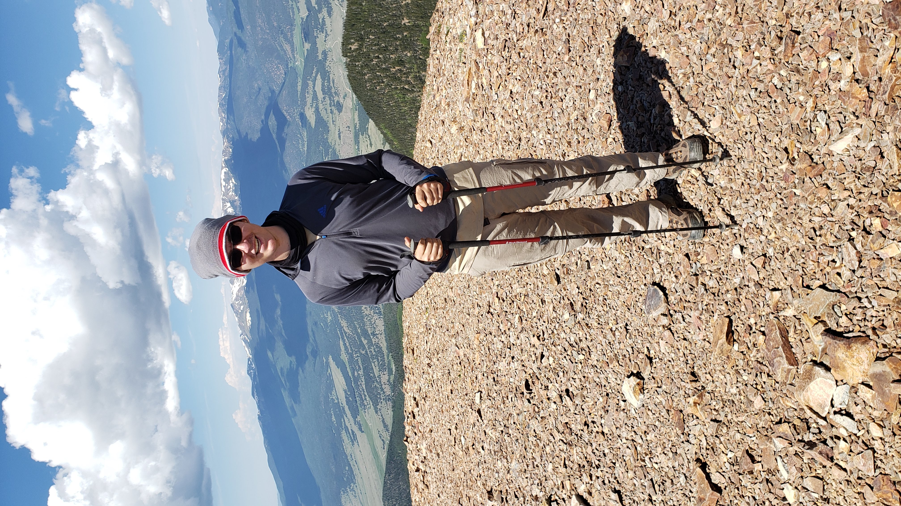

Interests
Music
Viola
I have been playing the viola since 2014 and I have taken private lessons from 2015 to 2020. During that time I play in my high school's orchestra program and found it very enjoyable.
Piano
I started taking piano lessons in 2018. During this time I played lot of pieces because I wanted to rather than just to get better at the instrument. Most of those pieces were from video games. In my opinion they sound very pretty and have more of an emotional impact on me.
DPPT Pokemon League
Outdoor Activities
Soccer
I have played soccer for as long as I can remember. All the way through high school I played in this recreational league, SAY Soccer. It was always a lot of fun for me and the stakes were pretty low. I just did it because I enjoyed the sport and I needed the exercise.
Backpacking
My backpacking career started when I was a boy scout, and before that, a cub scout. I had always enjoyed the outdoors and camping so it was a somewhat natural progression to go to backpacking. The best trip I had in Boy Scouts was to Philmont Scout Ranch (New Mexico). We backpacked for 100 miles across 10 days. The sights and expierences I gained cannot be understated.
